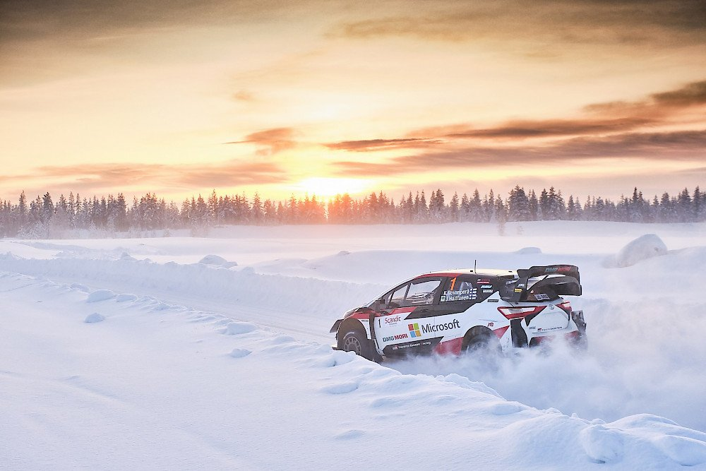

Rali VB
A rali-világbajnokság (ismert még: WRC, World Rally Championship) egy raliverseny-sorozat az FIA szervezésében. A bajnokságot 1973 óta rendezik. 1973 és 1976 között csak a gyártókat értékelték, az 1977-es és az 1978-as évben a versenyzők sorozatát pedig FIA versenyzők kupájának hívták. 1979-ben nyerte el ma is használatos lebonyolítási formáját.

| Év | Keresztnév | Vezetéknév | Autó |
|---|---|---|---|
| 2021 | Sébastien | Ogier | Toyota Yaris WRC |
| 2019 | Ott | Tänak | Toyota Yaris WRC |
| 2003 | Petter | Solberg | Subaru Impreza WRC |
